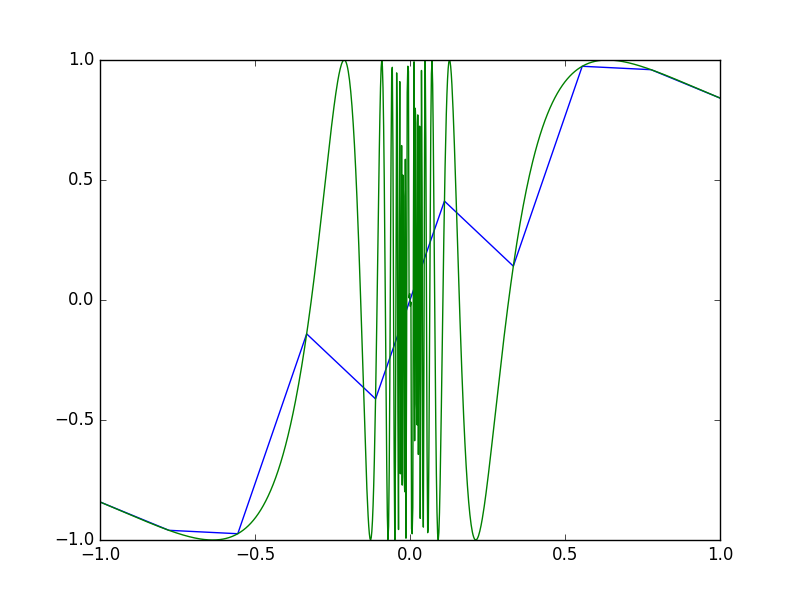

Gráficos
Gráfico de uma função: o básico
Faça o gráfico da curva :
import numpy as np ## importando numpy
import matplotlib.pyplot as plt## importanto o matplotlib para a geração dos gráficos
## fazendo os pontos da curva
t = np.linspace(0, 3, 51) ## 50 intervalos em [0, 3]
y = t**2*np.exp(-t**2) ## expressão vetorizada
plt.plot(t, y) ## faça o gráfico em uma janela
plt.savefig('fig.pdf') ## salvando imagem em PDF
plt.savefig('fig.png') ## salvando imagem em PNG
Um gráfico deve conter legenda, rótulo nos eixos e título
import numpy as np
import matplotlib.pyplot as plt
def f(t):
return t**2*np.exp(-t**2)
t = np.linspace(0, 3, 51) ## coordenadas em t
y = f(t) ## valores correspondentes em y
plt.plot(t, y, label=r'$t^2 exp(-t^2)$') ## faça o gráfico em uma janela
plt.xlabel('t') ## rótulo do eixo x
plt.ylabel('y') ## rótulo do eixo y
plt.legend() ## gera a legenda
plt.axis([0, 3, -0.05, 0.6]) ## limites [tmin, tmax, ymin, ymax]
plt.title(u'Meu primeiro gráfico completo')
Gráfico com várias curvas
Como colocar as curvas de e no mesmo gráfico:
import numpy as np
import matplotlib.pyplot as plt
theta = np.linspace(-np.pi, np.pi, 30, endpoint=True) ## coordenadas de theta
y1 = np.cos(theta) ## valores de y no cos
y2 = np.sin(theta) ## valores de y no sen
plt.plot(theta, y1, 'g', label=r'$cos(\theta)$', linewidth=5) #linha vermelha com espessura de 5 em pontos
plt.plot(theta, y2, 'b-o', label=r'$sen(\theta)$') #azul com círculos
plt.xlabel(r'$\theta$') ## rótulo do eixo x
plt.ylabel('y') ## rótulo do eixo y
plt.legend(loc='best') ## gera a legenda e posiciona melhor
plt.title(u'Plotando duas curvas no mesmo gráfico')
plt.savefig('cos_sen.png')
Outras posições para a legenda são: right, center left, upper right, lower right, best, center, lower left, center right, upper left, upper center e lower center.
Controlando os estilos das linhas
Quando são muitas as curvas a serem exibidas no mesmo gráfico é interessante mudar o visual de cada curva.
Podemos controlar o tipo da linha, a cor, a espessura e eventualmente marcadores sobre a curva se quisermos:
plt.plot(theta, y1, 'r-', label=r'$cos(\theta)$', linewidth=5) #linha vermelha com espessura de 5 pontos
plt.plot(theta, y2, 'b-o', label=r'$sen(\theta)$') #azul com círculos
Lembando que os argumentos posicionais sempre devem aparecer antes do argumentos palavra-chave. Se for construído assim:
plt.plot(t, y1, label=r'$cos(\theta)$', 'r-') #linha vermelha
Vai ser levantado um erro de sintaxe, pois label é um argumento palavra-chave.
Além disso, para mostrar o gráfico em um novo console você precisa ao final de todos os códigos, o comando plt.show().
Códigos para o estilo da linha e marcadores
Os códigos para estilo de linhas podem ser acessados com:
import matplotlib.lines as lines
lines.lineStyles.keys()
>>> [u'', u' ', u'None', u'--', u'-.', u'-', u':']
Os códigos para estilo de marcadores também:
import matplotlib.markers as markers
markers.MarkerStyle.markers.keys()
>>> [0, 1, 2, 3, 4, u'D', 6, 7, u's', u'|', u'', u'None',... u'<', u'>']
Os códigos para estilo de linha e de marcadores podem ser combinados.
Reorganizando os eixos e adicionando anotações
Podemos reposicionar os eixos e os marcadores de cada eixo, com seus respectivos valores, para melhor visualização:
plt.xlim(-4.0, 4.0) #define os limites em x
plt.xticks([-np.pi, -np.pi/2, 0, np.pi/2, np.pi],
[r'$-\pi$', r'$-\pi/2$', r'$0$', r'$+\pi/2$', r'$+\pi$']) #marcadores específicos
plt.ylim(-1.0, 1.0) #define os limites em y
plt.yticks([-1, 0, +1],
[r'$-1$', r'$0$', r'$+1$']) #marcadores com nomes
ax = plt.gca() ## gca significa 'get current axis'
ax.spines['right'].set_color('none') #removendo o fechamento da direita
ax.spines['top'].set_color('none') #removendo o fechamento de cima
ax.xaxis.set_ticks_position('bottom') #mantendo os marcadores abaixo
ax.spines['bottom'].set_position(('data',0)) #movendo o limite inferior para 0 dos dados
ax.yaxis.set_ticks_position('left') #mantendo os marcadores à esquerda
ax.spines['left'].set_position(('data',0)) #movendo o limite da esquerda para 0 dos dados
É possível também adicionar notas sobre o gráfico e melhorar a visualização dos elementos:
t = 2 * np.pi / 3
plt.plot([t, t], [0, np.cos(t)], color='blue', linewidth=2.5, linestyle="--")
plt.scatter([t, ], [np.cos(t), ], 50, color='blue')
plt.annotate(r'$sin(\frac{2\pi}{3})=\frac{\sqrt{3}}{2}$',
xy=(t, np.sin(t)), xycoords='data',
xytext=(+30, +5), textcoords='offset points', fontsize=16,
arrowprops=dict(arrowstyle="->", connectionstyle="arc3,rad=.2"))
plt.plot([t, t],[0, np.sin(t)], color='red', linewidth=2.5, linestyle="--")
plt.scatter([t, ],[np.sin(t), ], 50, color='red')
plt.annotate(r'$cos(\frac{2\pi}{3})=-\frac{1}{2}$',
xy=(t, np.cos(t)), xycoords='data',
xytext=(-90, -50), textcoords='offset points', fontsize=16,
arrowprops=dict(arrowstyle="->", connectionstyle="arc3,rad=.2"))
for label in ax.get_xticklabels() + ax.get_yticklabels():
label.set_fontsize(16)
label.set_bbox(dict(facecolor='white', edgecolor='None', alpha=0.65))
Separando os gráficos
É possível separarmos os gráficos em duas regiões distintas, como sub-gráficos.
Para isso precisamos criar uma figura:
import numpy as np
import matplotlib.pyplot as plt
theta = np.linspace(-np.pi, np.pi, 30, endpoint=True) ## coordenadas de theta
y1 = np.cos(theta) ## valores de y no cos
y2 = np.sin(theta) ## valores de y no sen
## Cria uma figura de tamanho 8x6 pontos, 80 pontos por polegada
plt.figure(figsize=(8, 6), dpi=80)
## Cria um novo sub-gráfico a partir de um grid de 2x1 e posiciona no 1
plt.subplot(2, 1, 1)
plt.plot(theta, y1, 'g', label=r'$cos(\theta)$', linewidth=5) #linha vermelha com espessura de 5 em pontos
## Cria um novo sub-gráfico a partir de um grid de 2x1 e posiciona no 2
plt.subplot(2, 1, 2)
plt.plot(theta, y2, 'b-o', label=r'$sen(\theta)$') #azul com círculos
Todas as demais personalizações mostradas anteriomente se aplicam a cada sub-gráfico.
Vamos tentar um gráfico de uma função discontínua
A função Heaviside é frequentemente usada na ciência e na engenharia:
Implementação em Python:
def H(x):
return (0 if x < 0 else 1)
Gráfico da função Heaviside: primeira tentativa
Abordagem padrão:
x = linspace(-10, 10, 5) ## few points (simple curve)
y = H(x)
plot(x, y)
Primeiro problema: Erro de ValueError em H(x) do if x < 0.
O erro completo:
return (0 if x < 0 else 1)
ValueError: The truth value of an array with more than one element is ambiguous. Use a.any() or a.all()
if x < 0 não funciona se x é um arranjo
Solução 1: usar um laço sobre os valores de x
import numpy as np
import matplotlib.pyplot as plt
def H(x):
return (0 if x < 0 else 1)
def H_loop(x):
r = np.zeros(len(x)) ## ou r = x.copy()
for i in xrange(len(x)):
r[i] = H(x[i])
return r
n = 5
x = np.linspace(-5, 5, n+1)
y = H_loop(x)
plt.plot(x, y)
Muito código e lento se n é grande.
Solução 2: usar a vetorização
import numpy as np
import matplotlib.pyplot as plt
def H(x):
return (0 if x < 0 else 1)
## vetorização automática da função H
Hv = np.vectorize(H)
## Hv(x) funciona com o arranjo x
n = 5
x = np.linspace(-5, 5, n+1)
y = Hv(x)
plt.plot(x, y)
Continua sendo tão lento quanto a solução 1.
Solução 3: escrever o teste if de forma diferente.
import numpy as np
import matplotlib.pyplot as plt
def Hv(x):
return np.where(x < 0, 0.0, 1.0)
n = 5
x = np.linspace(-5, 5, n+1)
y = Hv(x)
plt.plot(x, y)
Como fazer a função aparecer descontínua no gráfico?
- Amador: fazer um monte de pontos x;
- Pro: fazer o gráfico com dois segmentos de linha horizontais, um de x=-10 até x=0, com y=0 e outro de x=0 até x=10, com y=1:
import matplotlib.pyplot as plt
plt.xlim(-10, 10)
plt.ylim(-0.1, 1.1)
plt.plot([-10, 0, 0, 10], [0, 0, 1, 1])
Algumas funções são difíceis de se visualizar
Faça o gráfico de $f(x) = sen(\dfrac{1}{x})$:
import numpy as np
import matplotlib.pyplot as plt
def f(x):
return np.sin(1.0/x)
x1 = np.linspace(-1, 1, 10) ## uso de 10 pontos, azul
x2 = np.linspace(-1, 1, 1000) ## uso de 1000 pontos, verde
plt.plot(x1, f(x1), label='%d points' % len(x1))
plt.plot(x2, f(x2), label='%d points' % len(x2))
